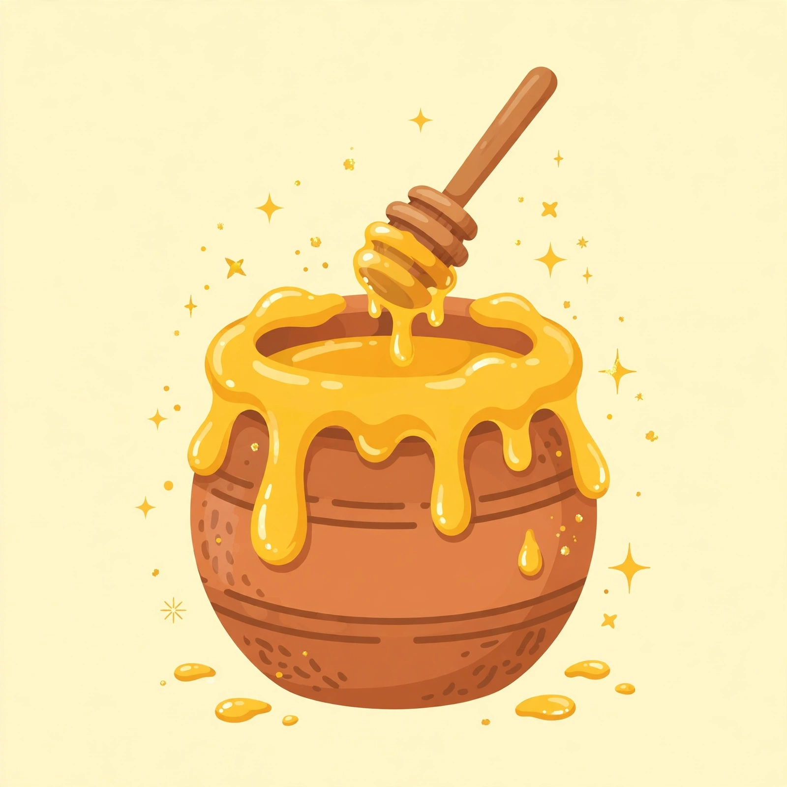

Madu Lulu sembunyi di balik bunga. Makin lama bunganya makin banyak — bantu Lulu menemukannya, yuk!
🌸Ketuk bunga
🍯Cari madu
⭐Dapat bintang
Di bunga mana madunya? 🍯
👆Ketuk 1 bunga!
Yeay, Hebat! 🎉
Lulu menemukan semua madunya. Terima kasih sudah membantu Lulu!

Untuk orang tua — game ini melatih fokus dan ketelitian anak usia 2–5 tahun. Kesulitan bertahap: ronde 1–2 ada 3 bunga, ronde 3–4 ada 4 bunga, ronde 5 ada 5 bunga.
ronde: – • bunga: – • madu di bunga: – • salah ketuk: 0